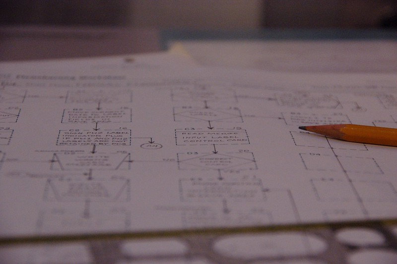

Columna de Informática - Yo no fui
Índice
- 1. Datos de la Columna
- 2. Columna 9: ¿Qué es el voto electrónico?
- 3. Columna 8: ¿Qué es el blockchain?
- 4. Columna 7: ¿Qué es la soberanía tecnológica? (¿y por qué es importante?)
- 5. Columna 6: Manuel Sadosky, «IBM go home» y más - 2da parte
- 6. Columna 5: ¿Quién fue Manuel Sadosky?
- 7. Columna 4: ¿Qué es el filtro burbuja?
- 8. Columna 3: ¿Qué es un algoritmo?
- 9. Columna 2: ¿Quién fue Alan Turing?
- 10. Columna 1: ¿Quién fue Ada Lovelace?
- 11. Consideraciones en el desarrollo del documento
- 12. Licencia de esta obra
- 13. Código fuente
Control Y es una columna que se emite cada dos viernes a las 15:00 por Radio Universidad CALF (FM 103.7) de Neuquén. Parte del Proyecto de Extensión «FaIComm: Charlando Sobre Informática», de la Facultad de Informática, Universidad Nacional del Comahue.
En esta página se encuentran los guiones y la bibliografía utilizada en la columna. También, puede encontrar los recortes y la fecha de emisión para volver a escucharlas por RadioCut.
⚠️ Las columnas están ordenadas de manera inversa: la más reciente primero.
1. Datos de la Columna
- Título
- Columna informática de Yo no fui.
- Sinopsis
- Aprender qué es la informática y los conceptos necesarios para entender el día a día de lo que sucede alrededor de la computadora. Explicaciones de hechos pasados y presentes relevantes para comprender lo que sucede a nuestro alrededor.
- Tema
- Informática
- Recorte
- Conocimiento general de la informática
- Enfoque
- Conceptos y curiosidades de la informática. Explicaciones de noticias actuales del tema.
- Audiencia
- Mayores de ~12 años, con conocimiento mínimo de la informática.
- Identidad Sonora
- Alegre, amena.
- Género
- Columna narrativa. Debates o entrevistas cortas.
- Formato
- Debate de 20’.
- Estructura
- Columna con introducción, desarrollo y conclusión.
- Introducción motivada por una pregunta disparadora (P. ej. ¿qué es un algoritmo?)
- Desarrollo con posible intervención de la personas presentes en el piso.
- Conclusión que ofrezca una pregunta o moraleja para el público.
- Alojamiento
- Vivo por radio Universidad CALF 103.7 Mhz (FM). Internet como recorte de la columna.
- Distribución
- Radio en vivo. Es posible distribuir por Spotify, RadioCut, página Web personal, open.audio u otra plataforma Funkwhale. Posiblemente, redes sociales (Mastodon y privativas).
- Identidad gráfica
- -
- Licencia
- Creative Commons + Reconocimiento + Compartir Igual 4.0 Internacional (CC-by-SA): http://creativecommons.org/licenses/by-sa/4.0/ Ante modificaciones, se debe especificar la obra original y sus autores.
2. Columna 9: ¿Qué es el voto electrónico?
¿Es fácil un proceso de votación? A ver… veamos…
¿Quiénes participan?
Votantes, autoridades, partidos políticos, proveedores del proceso electoral, otros poderes del estado (legislativo, ejecutivo, provinciales…)
- Calidad o propiedades de la votación:
- Secreto del voto: debe garantizarse… ¡y hasta ser evidente! ¿por qué?
- Pueden motivarte, amenazarte, extorsionarte, etc. a votar a un candidato determinado.
- Integridad:
- Capturar la intención devoto fehacientemente y sin sesgo.
- Registrar la intención de voto.
- Contabilizar el voto exactamente como fue registrado.
- Capacidad de auditoría y control del proceso.
- Igualdad de condiciones para todos los partidos.
- Universalidad: Permitir votar a la ciudadanía inscripta en el padrón.
- Convalidación: Análisis de datos posterior.
- Usable para todxs lxs participantes.
- Secreto del voto: debe garantizarse… ¡y hasta ser evidente! ¿por qué?
- Proceso de votación:
Emisión del voto → Escrutinio en la mesa → Generación de documentos → Comunicación de resultados → Procesamiento de resultados y publicación
¡Aún no hablamos del escrutinio definitivo!
- Sistemas de emisión de voto: Boleta Partidaria (BP), Boleta Única de Papel (BUP) y Voto Electrónico/Boleta Electrónica.
- ¿Qué componentes puede tener una máquina de voto electrónico?
Pensemos… ¿qué necesita tener una máquina para poder votar?
- Pantalla.
- Un CPU para generar la información.
- Datos: partidos políticos, interfaz gráfica.
- Programas: ¿varios lenguajes? → Posiblemente: C/C++ para controlar los dispositivos.
- ¡Un Sistema Operativo! → ¿Linux? ¿Open/Free BSD? ¿Windows? ¿Otro?
- Programas que controlan la impresora, pantalla, teclado/tactil (drivers/controladores).
- Entorno para la interfaz (Web, Qt, GTK, otro).
- Desarrollo backend (debajo de la interfaz) → almacenamiento no sería necesario.
- Impresora
- Un dispositivo para escribir y otro (o el mismo) para leer el chip NFC.
- Disco rígido/almacenamiento interno → No es necesario.
- Memoria RAM → ¡Obviamente!
- Conexión y placa de Red → Depende de la comunicación de resultados.
- USB → No es necesario.
- Batería → Sí, por las dudas.
- Cables → Sí, y lo más largo que se pueda.
- Carcaza/cobertor bien aislado y protegido → ¿Qué sería eso? ¿se puede?
- La pregunta que todxs nos hacemos: ¿Cómo funciona el software?
- La respuesta que cualquier persona informática te puede decir: «ni idea» .
- ¿Tenés ganas de hablar de Javascript, HTML y tecnología Web? jaja.
- El software es muy maneable: se puede cambiar de un minuto para el otro.
- ¿Sabemos qué hace el software? → habría que leer todo el código… y probar cada pedazo.
- ¿Tendrá fallas?
- ¿Una persona puede leer el código hecho por muchas otras?
- Auditorías para especialistas en seguridad de la información.
- Consecuencias de su uso.
- ¿Podemos decir que mantiene el secreto al voto? →
- ¿Podemos asegurar que todas las máquinas funcionan igual y no fueron alteradas? → Necesitamos un técnico en cada sector para chequear las máquinas… y chequear de forma seguida.
- Nos dejamos estar: la máquina hace todo, y rápido… pero ¿se controla?
- ¿Todas las personas saben usarla? ¿Todas las personas pueden usarla?
- Es muy difícil explicar: ¿entendieron algo? ¿Qt? ¿Interfaz gráfica? ¿NFC?
- ¿Cómo le explico a cada persona el funcionamiento?
🤔 Preguntas (¡prohibido usar ChatGPT para responderlas!):
- ¿Les parece que cualquier tecnología ya existente dejó de servir o ya no ayuda? ¿Que siempre debemos cambiarlas por computadoras o programas?
¿Les parece que deberíamos comprender y debatir lo que se hace con las computadoras, la informática y los dispositivos electrónicos? Especialmente en procesos que nos afectan a la ciudadanía completa (IA, cámaras, celulares, redes sociales, etc.).
¡Hablamos de soberanía tecnológica un una columna anterior!
2.1. Bibliografía
- «Análisis de factibilidad en la implementación de tecnología en diferentes aspectos y etapas del proceso electoral». Consejo Nacional de Investigaciones Científicas y Tecnológicas (CONICET). 2017. https://www.conicet.gov.ar/wp-content/uploads/Analisis_factibilidad_implementacion_tecnologia_proceso_electoral.pdf
Más material interesante para leer:
📚 Informes del Observatorio Electoral de la Universidad Nacional del Comahue.
https://observatorioelectoral.uncoma.edu.ar
Descripción de las máquinas del sistema de Boleta Única Electrónica (BUE) utilizado en Neuquén observado en la audiencias brindadas por el Juzgado Electoral:
«Vot no». Nicolás D’Ippolito. El gato y la caja.
- 📚 «Voto Electrónico. Una solución en busca de problemas». Beatriz Busaniche. Fundación Vía Libre. 2017. https://www.vialibre.org.ar/divulgacion/libro-voto-electronico-una-solucion-en-busca-de-problemas/
«Alemania: urnas electrónicas anticonstitucionales». Fundación Vía Libre. 2009.
https://www.vialibre.org.ar/alemania-urnas-electronicas-anticonstitucionales/
3. Columna 8: ¿Qué es el blockchain?

Figura 1: Una «granja minera» de computadoras de Islandia.
En estas semanas escuchamos acerca de «peso digital», «criptomonedas», «blockchain»… pero ¿qué significa? ¿cómo funciona? Por ello, para no hacernos más confusión y comprender todos estos temas, decidimos contarte acerca del blockchain, cómo funciona y qué relación tiene con las criptomonedas. Con estos conceptos un poco más claros, podemos comprender más la idea propuesta del peso digital.
🖼️ Imágen: Cryptocurrency mining farm - Bajo licencia Creative Commons Atribución-CompartirIgual 4.0 Internacional (CC-by-SA 4.0). Obtenido desde Wikimedia Commons.
{kind=link}
3.1. Guion
- Creación e idea:
- Moneda digital: Sí, no hay nada físico excepto tu celu o la compu.
- Satoshi Nakamoto propone el primer blockchain (Bitcoin) en 2009.
- Objetivos:
- Peer-to-peer (de «persona» a «persona» o transferencia directa).
- Sin instituciones financieras intermediarias.
- 🏦 ¿Cómo funcionan los bancos ahora?
- Tienen un libro contable (digital o no): toda transferencia se escribe allí.
- Controla y regula. Busca brindar garantías y seguridad de que se cumpla la ley.
- Balance: si se retira dinero de un lado, y se suma a otro, debe haber un equilibrio.
- ¿Cómo se les ocurriría implementar una moneda digital?
Intentemos crear una moneda digital… ¿qué hace falta? ¿firmas digitales? ¿un documento? ¿qué datos habría que almacenar?
Double-spending problem (problema del «doble-gasto»).
¡No se debe poder gastar la misma moneda!
¿Pueden comprar dos cosas diferentes con un mismo billete?
- Debe quedar registrada la transacción.
- Una vez registrada, no se debe poder cambiarse.
- Debe poder ser validada.
- 🪙 Un Blockchain debe ser:
- Descentralizado y distribuido → Un programa que funciona en muchas máquinas.
- Actúa como un libro/registro contable.
- Una cadena de bloques con datos (los datos son las transacciones).
- No deben poder ser alterados.
- Cada bloque debe poder ser validado → deben ser públicos.
¿Cómo funciona una transacción digital? Para una persona que conoce un libro contable, es muy probable que entienda rápidamente el concepto de blockchain.
- Supongamos que mágicamente tengo 1₿ (¡ojalá!), y se lo quiero dar a Virgi (primer transacción).
- En el registro se guarda: el número de Virgi, y mi firma de que se lo paso a ella.
- Supongamos que Virgi se lo pasa a Mete (segunda transacción).
- En el mismo registro se guarda: el número de Mete, la firma de Virgi de que se lo pasa a él.
- ¿Y la moneda? → Son las transacciones de ella. No hay token ni nada de ella, solo una cantidad.
Opcional: ¿cómo se genera la primer transacción? O sea, en el ejemplo, ¿cómo obtuve 1₿?
- La persona que crea un bloque correctamente se le paga una compensación.
- Cada bloque tiene una transacción inicial que le asigna una X cantidad de Bitcoins al creador.
- La pregunta es: ¿cómo se gestiona la cantidad de monedas? → ¡Hay que hablar de las Proof of Work y Proof of Stake!
- Un bloque contiene:
- Muchas transacciones (datos).
- Datos de su creación.
- El número que identifica al bloque anterior.
- Una validación del bloque anterior.
- Dependiendo del consenso: la solución al problema difícil o la firma digital del creador.
- Una vez aceptado el bloque por la mayoría, sus transacciones se confirman.
(Opcional) Métodos de consenso Recordemos que el Blockchain es distribuido: todas las máquinas tienen una copia.
Debe haber una forma de validar y consensuar que un bloque es correcto y que se agrega al blockchain.
Estos métodos se llevan a cabo por programas: ¡supongamos que todos tienen el mismo programa!
- Proof of Work (PoW)
Se requiere un trabajo complejo: «difícil» de generar la solución, «fácil» de validarla.
Difícil ≡ Mucha computación
Fácil ≡ Muy poquita computación
En otras palabras ¡un problema de complejidad NP-hard!… ¿NP what?… ¡para la próxima columna!
- La computadora que encuentre la solución, distribuye el bloque nuevo: las otras validan y lo agregan.
- Mineros: Computadoras que crean (minan) bloques (buscan la solución al problema complejo).
- Proof of Stake (PoS)
- La computadora creadora del bloque, «forger«, se designa aleatoriamente o bajo un criterio.
- Debe poner un capital de riesgo 💰: plata en la misma criptomoneda.
El resto validan si el forger hace un buen trabajo (puede ser seleccionado aleatoriamente).
Si el forger es deshonesto, se le quita el capital de riesgo.
- La computadora creadora del bloque, «forger«, se designa aleatoriamente o bajo un criterio.
- Diferencias:
- PoW requiere mucha computación → mucha electricidad → impacto ambiental.
- PoW genera los bloques muy lentamente → las transacciones se confirman mucho después de hechas.
- PoW no controla la emisión de moneda, PoS sí puede controlarla.
- Proof of Work (PoW)
- (Opcional) Seguridad del blockchain
- Smart contracts
- ¿qué pasa si agregamos más datos al bloque? Un programa, y por ejemplo: datos de una venta de cannolis.
- El programa: es un «contrato», contiene criterios para realizar una tarea, ej.:
- Si tenés X plata en la billetera del cliente, y hay stock de cannolis para vender, entonces concretar la transacción.
- Caso contrario, no realizar la transacción.
3.2. Bibliografía y otros recursos
«Bitcoin: A peer-to-peer electronic cash system». Satoshi Nakamoto. 2009.
- https://en.bitcoin.it/wiki/Proof_of_Stake
Poelstra, Andrew. (2015). On Stake and Consensus.
https://nakamotoinstitute.org/research/on-stake-and-consensus/
- https://lisk.io/academy/blockchain-basics/how-does-blockchain-work/proof-of-stake
- https://web.archive.org/web/20150127033542/https://cointelegraph.com/news/113157/proof-of-work-proof-of-stake-and-the-consensus-debate
Curiosidades:
4. Columna 7: ¿Qué es la soberanía tecnológica? (¿y por qué es importante?)
📻 Emisión al aire:
🎧 Recorte en RadioCut aún no disponible.

Figura 2: Estación Terrena Benavídez, donde se operan los satélites ARSAT, la Red Federal de Fibra Óptica, entre otros servicios.
Encontramos tecnología alrededor nuestro: En nuestro trabajo, en nuestra casa, en nuestra vida cotidiana, en las calles, incluso en el espacio. Dispositivos electrónicos y digitales, software y hardware, todas tecnologías que están para brindarnos algún servicio o para poder usar alguna herramienta. ¿Pensamos alguna vez si estas tecnologías están bajo nuestro control? ¿bajo el control del estado o de la población que los usa? En esta columna charlamos un poco del concepto de soberanía tecnológica. Un concepto un tanto abstracto aunque muy relevante, para tomar conciencia de lo importante que es tener soberanía sobre el hardware y software que nos rodea.
🖼️ Imágen: Estación Terrena Benavídez por BugWarp - Bajo licencia Creative Commons Atribución-CompartirIgual 4.0 Internacional (CC-by-SA 4.0). Obtenido desde Wikimedia Commons.
{kind=link}
4.1. Guion
soberanía
- f. Cualidad de soberano.
- f. Poder político supremo que corresponde a un Estado independiente.
Ejercicio mental: ¿se imaginan nuestro país sin informáticos pero… solo en nuestro país?
¿Cómo haríamos lo siguiente?
- Comunicaciones:
- Internet → comunicación, redes sociales.
- Compartir documentos.
- Servidores en las instituciones: ¿quiénes manejan las computadoras?
- Correos electrónicos, páginas Webs: ¿otras personas nos crean nuestros contenidos por nosotros?
- Programas y sistemas informáticos.
- Robótica en la industria.
- Industria tecnológica: elaboración de electrodomésticos, autos.
- Medicina, estado, industrias varias.
- Satélites → pronósticos meteorológicos, Internet.
- Seguridad, defensa y soberanía territorial: Cámaras de vigilancia, comunicaciones.
- Imaginemos que:
- incluimos especialistas en administración de redes y servidores.
- incluimos especialistas en programación
- incluimos especialistas en electrónica.
- incluimos especialistas en seguridad.
- Comunicaciones:
- Ejercicio mental: ¿se imaginan si no hay hardware, servidores, satélites, fibra óptica y/o cable que transporten datos, etc.?
- Imaginemos: para que Argentina se conecte a Internet hay un solo cable, que pasa por X país.
- Imaginemos: No hay ARSAT, ¿quién ocupa esa órbita? ¿qué hacen con ella?
- Imaginemos: No hay industria electrónica, ¿cómo conseguimos nuestras heladeras? ¿a qué precio?
- Palabras claves: soberanía, tecnología, disruptivo, dependencia tecnológica.
disruptivo: Más palabras claves: revolución, cambios, caótico, ausencia de predictibilidad, obsolescencia de tecnologías viejas, reestructuración.
¿Se acuerdan del COVID-19 y ChatGPT? ¿nos preguntamos qué efectos tendrá?
dependencia tecnológica: ¿qué puedo hacer con esa tecnología? ¿qué hacen detrás de la tecnología que dependo? ¿qué pasa si deja de funcionar?
Pensemos… nuestros archivos en la nube: es muy útil… pero:
- ¿qué pasaría si necesito escanear mis archivos para buscar algo muy específico?
- ¿qué pasaría si pierdo acceso a esa cuenta o se cae ese sistema?
- ¿qué pasaría si hay datos muy sensibles acerca de donde trabajo?
- ¿qué pasaría detrás de los servidores? ¿pueden usar esos archivos?
- Soberanía digital (software, datos + programas):
- Supongamos que usamos un programa que no fue hecho por ninguna entidad argentina. Además, le proveemos datos de qué hacemos todos los días.
- Privacidad: ¿Quiénes tienen acceso a esa información? Administradores del sitio, dueño de la entidad, etc.
- ¿Qué pasa si queremos borrar nuestra cuenta?
- ¿Qué pasaría si quisieramos recuperar nuestros datos? ¿y si quisieramos sabe qué hacen con ellos?
PRISM evidenciado por Edward Snowden generó controversia: ¿soberanía tecnológica o de la información? ¿cómo afecta a la privacidad de la ciudadanía?
Existen un amplio debate si optar entre privacidad en la información, por ejemplo, cifrando conexiones; o la soberanía en la tecnología en sí: conexiones propias, prácticas, equipos.
Más debates en varios países, por ejemplo: ¿políticas nacionales o políticas geolocalizadas referidas al uso de la tecnología?
Por ejemplo, un cable que conecta a Internet: ¿es mejor que un país use el propio o que tenga políticas geolocalizadas con países vecinos?
- Supongamos que usamos un programa que no fue hecho por ninguna entidad argentina. Además, le proveemos datos de qué hacemos todos los días.
- Aprender tecnología e informática es importante → ¿podemos controlar algo si no sabemos cómo se usa o cómo funciona?
A veces está bien no saber cómo funciona todo, pero…
¿nunca llevaste a arreglar la compu a un técnico?
¡alguien tiene que entender cómo funciona!
Acceso a la información y la educación → ¿qué pasaría con la soberanía tecnológica si no hay acceso a la educación?
¿se acuerdan de «IBM go home»? ¿por qué los estudiantes pedían aprender más computación y no solo a usar la IBM?
- Estado y la gente → Acceso a la información y al software.
- ¿Software y hardware libre? → ¡Cambiar, modificar, aprender, reusar!
P. ej.: Imagínense que para obtener un documento «público» del estado, debemos tener una computadora y pagar una «licencia» ¿quiénes pueden acceder?
Por cierto: ¿probaron LibreOffice? ¿por qué pagar licencia cuando tenés una opción software libre y con todas las características de la paga?
- Industria nacional y derecho a Reparar:
- ¿Se preguntaron cómo funciona las cosas que usamos?
- ¿Cómo conseguir equipos? ¿Cómo conseguir repuestos?
- ¿Y qué sucede con la Obsolescencia programada…?
Pensemos: ¿Qué tecnologías dependemos en nuestro día a día? Y de esas tecnologías: ¿Cuáles tenemos a nuestro alcance como argentinos? ¿Conocemos las tecnologías que se desarrollan y desarrollaron en nuestro país? ¿Qué control o gestión tiene la ciudadanía y el estado de esas tecnologías?
4.2. Bibliografía
«NSA Prism program taps in to user data of Apple, Google and others», Glenn Greenwald and Ewen MacAskill, 2013.
Explicación del programa PRISM.
https://www.theguardian.com/world/2013/jun/06/us-tech-giants-nsa-data
« »All your Internet are Belong to Us«: On Nation States’ Claims of Sovereignty over ICT Architecture and Contents». Miguelángel Verde Garrido. Berlin Forum on Global Politics. 2016.
«¿Por qué es importante la soberanía tecnológica?». Pablo Carrai. Artículo en Educ.Ar.
https://www.educ.ar/recursos/155423/por-que-es-importante-la-soberania-tecnologica
«Relaciones entre soberanía y tecnología en los tiempos de Internet». Ariel Sabiguero, et al. Revista de la Facultad de Derecho. ISSN 0797-8316 e ISSN 2301-0665. 2016.
http://www.scielo.edu.uy/scielo.php?script=sci_arttext&pid=S2301-06652016000200011
5. Columna 6: Manuel Sadosky, «IBM go home» y más - 2da parte ATTACH
📻 Emisión al aire:
Figura 3: Personal operando la computadora Clementina.
La vez pasada hablamos de Sadosky, la primer computadora en nuestro país y la nefasta noche de los bastones largos, pero… ¿y después? ¿qué pasó?
A eso venimos hoy, a contarte qué sucedió después. Algunas cosas que valen la pena recordar que sucedieron entre los 70’ y los 90’.
🖼️ Imágen proveniente del artículo «Clementina, la primera computadora en la Argentina» de Lucas Delgado. Artículo bajo la licencia CC-by-NC-SA. URL: https://www.educ.ar/recursos/118069/clementina-la-primera-computadora-en-la-argentina.
5.1. Guión
- Repaso rápido:
- Reforma universitaria: movimiento estudiantil del 1918 para reformar la universidad, buscan:
- Autonomía del poder político, gobierno representado por estudiantes y docentes, asignación por concursos públicos, libertad de pensamiento.
- Resumen de la vida de Sadosky:
- Sadosky nace el 13 de abril de 1914, cursó primaria y secundaria en la Escuela Normal Mariano Acosta (si no entiendo mal, es una escuela pública). En 1940 se graduó como Doctor en Ciencias Fisico-Matemáticas de la UBA y ejerció la docencia en la Universidad de La Plata.
- Publicó libros
- Hablamos de Instituto del Cálculo y Clementina, la primer computadora.
Se compró una Mercury Ferranti que llegó en 1960. 152.099 libras esterlinas, (equivalen a USD 4.500.000 en el 2011).
¿Vamos de compras en 1960?
- Ultrathin (?): 18 metros y medio de largo, media tonelada de peso.
- Rápida (?): Tres horas para encender.
- Fácil de instalar (?): Red eléctrica distinta a la convencional.
- ¿Gigas de RAM DDR5? Nah, de válvulas mejor: 1K de palabras de 48b = 4750 Bytes = ~4Kb
- ¿Disco rígido sólido? ¿para qué?: Disco de tambores magnéticos, 4 tambores de 8K cada uno.
- ¿Monitor de 500 pulgadas? Ni ahí: Entrada/Salida con cinta de papel perforado, impresora 30 caracteres por segundo. Pero le adaptaron un lector de tarjetas perforadas nacional.
- ¿Teclado? ¿para qué? nah, no tiene.
- Un parlante (con musiquita de «Oh my darling, Clementine»).
- ¿Windows 60’? No, no… Programas: Ensamblador orientado al cálculo, Autocode.
- Luego, se creó el compilador y lenguaje COMIC en Argentina gracias a Liana Lew, Noemí García, Wilfred Durán, Ana Zoltran Torres, Clarisa Cortés.
- Reforma universitaria: movimiento estudiantil del 1918 para reformar la universidad, buscan:
Repaso rápido: ¿Para qué se usaba?
Se usaba para cálculos matemáticos: pautas en el sistema de ahorro y préstamos, estudio de ríos patagónicos, cálculos astronómicos (órbita del cometa Halley), censos comerciales, análisis del funcionamiento de reactores nucleares, investigaciones cardiológicas, traducciones (ruso-español).
Encargada de programarla: Cecilia Berdichevsky, primer programadora Argentina.
- En esa época: ¿Quién tenía idea de cómo programar esta computadora? → Se fundó el Instituto del Cálculo en 1962.
- Primer carrera de informática: «Computador Científico».
- Autocode: un sistema para la Ferranti Mercury - 1961
📚 Leer los agradecimientos de la nota preliminar del manual de Autocode de García Camarero del IC (ver Bibliografía):
«Hemos de agradecer la paciente y minuciosa lectura de nuestra primera redacción, así como sus múltiples puntualizaciones, a la Dra. Cicely M. Popplewell. También agradecemos la valiosa colaboración de la Dra. R.Ch. de Guber [Dra. Rebeca Guber]. Buenos Aires, octubre de 1961» – E. García Camarero
- Cicely Popplewell
- ¡Trabajó directamente con Alan Turing diseñando el lenguaje de la Ferranti Mark 1!
- Dió el primer curso de programación en Argentina.
- COMIC (Compilador del Instituto del Cálculo): Lenguaje de programación creada por IC - 1965
- Autocode podía mejorarse.
- Wilfred Durán realizó ingeniería inversa del Autocode.
- Mejoraba: nombres de variables y manejo de matrices.
- Primer software de base argentino.
- La Universidad de Buenos Aires (UBA) Y la Universidad del Sur (UNS) quisieron hacer su computadora:
- UBA: La Computadora Electrónica de la Facultad de Ingeniería de la Universidad de Buenos Aires (CEFIBA, 1962) a cargo del Ing. Humberto Ciancaglini.
- Inaugurada a poco menos de cuatro años de iniciado el proyecto.
- La idea era preparar a jóvenes para sistemas digitales electrónicos.
- UNS: la CEUNS (1962) a cargo del Ing. Jorge Santos → Procesaba con números racionales.
- UBA: La Computadora Electrónica de la Facultad de Ingeniería de la Universidad de Buenos Aires (CEFIBA, 1962) a cargo del Ing. Humberto Ciancaglini.
- ¿Qué pasó luego? La noche de los bastones largos (29 de julio de 1966, en dictadura de Onganía).
Intervencion de las Universidades Nacionales.
Humillados violentamente: estudiantes, docentes y graduados, los retiraron a la fuerza del edificio, y afuera, los hacían pasar uno a uno para pegarles con palos o culatas.
¿Por qué los militares hicieron eso?
- Docentes, alumnos y graduados, hasta Warren Ambrose, profesor del MIT y de la UBA, fueron detenidos.
- Renuncias y éxodo de investigadores - Fuga de cerebros . Sadosky se exilió más tarde, en ~1974.
- El IC, Clementina y la carrera de Computador Científico se fue dejando de lado hasta su término. Agonía de Clementina: baja inversión para reparaciones hasta su cierre definitivo en 1970.
- Sucesivas protestas estudiantiles y represión. Policías en aulas y pasillos.
- Prohibidas reuniones en la facultad.
- Clementina deja de funcionar y la computación entra en una época oscura por varios años.
¿Qué pasó luego de la noche de los bastones largos? IBM Go Home (1966-1971)
Gobierno: Dictadura de Juan Carlos Onganía.
- Vacío en las universidades → plantel cubierto por profesionales de IBM.
- Cambios en la carrera → Se hicieron apéndice de la multinacional.
- Antes se enseñaba a programar en Mercury e IBM → Pasó a enseñarse solo IBM.
- No hubo una reforma curricular → Fue implícito.
- Clementina no pudo ejecutar los programas de los estudiantes → aparece la frase «no hay computadora para los alumnos».
- Cada marca proveía su propio Hardware y su Software → ¡Dependecia a la marca!
- Clementina deja de funcionar en 1970.
- En 1971 se produjo una huelga de estudiantes (de distintas alineaciones políticas) para cambiar la currícula. Pedían:
- Aprender contenido más general.
- A utilizar equipos de varias marcas.
- Tener el nivel para desarrollar todo el software de base.
Conclusión personal: Actualmente, la carreras informáticas son diferentes, pero siguen con la misma idea: se enseña cómo funciona una computadora en general, y después lo particular de cada cosa.
- ¿Qué más hizo Sadosky después?
- Montevideo: ayudó a la creación del IC allí. Dr. Honoris Causa.
- Fundó la consultora Asesores Científico Técnicos, primera empresa especializada en desarrollo de software del país.
- Fue Secretario de Ciencia y Técnica en 1983 (democracia de Raúl Alfonsín).
- La ESLAI (1985)
- Atraso y brecha tecnológica:
- Acá: Todo detenido durante la dictadura. ¿Hay carreras, licenciados, doctores, informática aplicada? → muy poca.
- Afuera: Avanzó sin detenerse.
- ¡Se necesitan más profesionales!: ¿cómo les parece que afecta la ausencia de profesionales en la informática en los distintos sectores de argentina? ¿cómo pueden haber más profesionales si en nuestro país no hay quién los forme?
- Sadosky promueve la Escuela Superior Latinoamericana de Informática (ESLAI), un paralelo del Balseiro pero en computación.
- La idea: Introducir profesionales actualizados, y altamente capacitados, en los sectores académicos y productivos.
- Rápido: dedicación exlusiva al estudio y la investigación.
- «Blindaje político» → Habracar países latinoamericanos. Directorio con funcionarios de la UNESCO, Secretaría de Ciencia y Técnica del país, empresarios informáticos y personalidades académicas.
- Durante la presidencia de Menem, 1990: Las inversiones para la ESLAI no llegan, aluden a demoras burocráticas. Esto genera la desfinanción y el posterior cierre.
- Atraso y brecha tecnológica:
🤔 Preguntas: Estas cosas que mencioné, ¿observaron el rol de la educación pública? ¿la importancia de la educación y el acceso al conocimiento? Si no se investiga ni se estudia con especialistas, si la inversión en esto se cae: ¿cómo afecta a los sectores industriales, académicos, etc.?
Algunos datos de color:
- CONICET: Se funda en 1958. La inversión para la primer computadora fue realizada al CONICET en 1962.
5.2. Bibliografía
«Historia de la Informática en Latinoamérica y el Caribe: investigaciones y testimonios». Jorge Aguirre y Raúl Carnota. Universidad Nacional de Río Cuarto, Argentina. 2009.
👓 PDF disponible en: https://www.researchgate.net/publication/310625262_Historia_de_la_informatica_en_Latinoamerica_y_el_Caribe_investigaciones_y_testimonios
«Sadosky por Sadosky vida y pensamiento del pionero de la computación argentina». Raúl Carnota, Carlos Borches. Fundación Sadosky.
👓 PDF disponible en: https://www.dc.uba.ar/clementina50/sadosky-por-sadosky-2/
¿Para qué tareas se utilizó Clementina?
«Clementina, la primera computadora que tuvo la UBA», Daniel Balmaceda. Artículo del diario La Nación del 17 de diciembre del 2019.
https://www.lanacion.com.ar/sociedad/clementina-primera-computadora-tuvo-uba-nid2315966/
Canción de Clementina.
«Oh, my darling Clementine» interpretada por Rabanus Flavus (Peter Gerloff). Archivo MIDI disponible en Wikimedia commons. Obra bajo la licencia Creative Commons 0 (CC0 1.0).
https://commons.wikimedia.org/wiki/File:O_My_Darling_Clementine.mid
Cecilia Berdichevski y las mujeres que trabajaron con Clementina y COMIC.
«Las mujeres de Clementina». Departamento de Computación de la Facultad de Ciencias Exactas y Naturales, UBA.
COMIC el primer compilador argentino.
«COMIC el lenguaje de programación y compilador del Instituto de Cálculo en 1965». Durán Salvador, Wilfred Oscar (2018). Ediciones del domo.
- «Panorama de la historia de la Computación Académica en la Argentina. Jorge Aguirre.
Nota Preliminar de García Camarero:
«Autocode un sistema simplificado de codificación para la computadora Mercury» Instituto del Cálculo UBA. 1961.
6. Columna 5: ¿Quién fue Manuel Sadosky?
📻 Emisión al aire:
🎧 Escuchar recorte en RadioCut.

Figura 4: Manuel Sadosky de pié al lado de Clementina.
En la columna de hoy, hablaremos del doctor Manuel Sadosky. Pero antes, daremos un poco de contexto, la reforma universitaria de 1918, y cómo afectó después a las universidades. Sadosky junto con otros científicos trajeron y utilizaron la primer computadora a argentina, que por la música que emitía, la llamaron Clementina. ¿Quieren saber un poco de esta historia y quiénes fueron las primeras personas que programaron en Argentina? ¡Prepárense unos mates y escuchen este audio!
🖼️ Imágen: Manuel Sadosky y Clementina. Imágen bajo el dominio público. Obtenido desde Wikimedia Commons.
{kind=link}
6.1. Guión
- Contexto: Universidades desde el siglo XIX hasta 1918:
- Católicas mayormente (UNC), estudiantes con dificultades para ingresar.
- Ley de Avellaneda: el Gobierno Nacional dicta sus estatutos, designan las autoridades y profesores y dependen administrativamente del gobierno.
- Reforma universitaria: 1918
- Importante movimiento estudiantil: autonomía del poder político, gobierno representado por docentes y estudiantes, asignación por concursos públicos, libertad de pensamiento.
- Sadosky nace el 13 de abril de 1914, cursó primaria y secundaria en la Escuela Normal Mariano Acosta (si no entiendo mal, es una escuela pública). En 1940 se graduó como Doctor en Ciencias Fisico-Matemáticas de la UBA y ejerció la docencia en la Universidad de La Plata.
- Becado para ir a Francia durante 1946-1948, investigó en Italia. Atestiguó el surgimiento de las primeras computadoras.
- Publicó «Cálculo numérico y gráfico», primer texto en castellano de su tipo. 1952.
- Vuelve a la docencia en 1955.
- «Cálculo diferencial e integral» junto con Dra. Rebeca Guber. 1956.
- Dr. Manuel Sadosky con Gonzáles Domínguez, Rey Pastor y otros profesores de la UBA comenzaron a incluir la Computación en 1957.
- 1957 las universidades son autónomas y autárquicas.
- Este contexto impulsa la designación de personas destacadas y el desarrollo de la computación.
- Se radican extranjeros con importantes conocimientos matemáticos.
- Impulsan proyectos de desarrollo de las Ciencias.
- La Facultad de Ciencias Exactas y Naturales de la UBA tiene como vicedecano al Dr. Manuel Sadosky en este año.
Se compró una Mercury Ferranti que llegó en 1960. 152.099 libras esterlinas, (equivalen a USD 4.500.000 en el 2011).
¿Vamos de compras en 1960?
- Ultrathin (?): 18 metros y medio de largo, media tonelada de peso.
- Rápida (?): Tres horas para encender.
- Fácil de instalar (?): Red eléctrica distinta a la convencional.
- ¿Gigas de RAM DDR5? Nah, de válvulas mejor: 1K de palabras de 48b = 4750 Bytes = ~4Kb
- ¿Disco rígido sólido? ¿para qué?: Disco de tambores magnéticos, 4 tambores de 8K cada uno.
- ¿Monitor de 500 pulgadas? Ni ahí: Entrada/Salida con cinta de papel perforado, impresora 30 caracteres por segundo. Pero le adaptaron un lector de tarjetas perforadas nacional.
- ¿Teclado? ¿para qué? nah, no tiene.
- Un parlante (con musiquita de «Oh my darling, Clementine»).
- ¿Windows 60’? No, no… Programas: Ensamblador orientado al cálculo, Autocode.
- Luego, se creó el compilador y lenguaje COMIC en Argentina gracias a Liana Lew, Noemí García, Wilfred Durán, Ana Zoltran Torres, Clarisa Cortés.
¿Para qué se usaba?
Se usaba para cálculos matemáticos: pautas en el sistema de ahorro y préstamos, estudio de ríos patagónicos, cálculos astronómicos (órbita del cometa Halley), censos comerciales, análisis del funcionamiento de reactores nucleares, investigaciones cardiológicas, traducciones (ruso-español).
Encargada de programarla: Cecilia Berdichevsky.
- La Universidad de Buenos Aires (UBA) Y la Universidad del Sur (UNS) quisieron hacer su computadora: la CEFIBA (1962).
- UBA: La CEFIBA (1962) a cargo del Ing. Humberto Ciancaglini.
- UNS: la CEUNS (1962) a cargo del Ing. Jorge Santos → Procesaba con números racionales.
- ¿Quién tiene idea de cómo programar esta computadora? → Fundó el Instituto del Cálculo en 1962.
- Autocode: un sistema para la Ferranti Mercury - 1961
📚 Leer los agradecimientos de la nota preliminar del manual de Autocode de García Camarero del IC (ver Bibliografía)
«Hemos de agradecer la paciente y minuciosa lectura de nuestra primera redacción, así como sus múltiples puntualizaciones, a la Dra. Cicely M. Popplewell. También agradecemos la valiosa colaboración de la Dra. R.Ch. de Guber. Buenos Aires, octubre de 1961» – E. García Camarero
- COMIC : Lenguaje de programación creada por IC - 1965
- Autocode: un sistema para la Ferranti Mercury - 1961
- ¿Qué pasó luego? La noche de los bastones largos (29 de julio de 1966, en dictadura de Onganía).
Intervencion de las Universidades Nacionales.
Humillados violentamente: estudiantes, docentes y graduados, los retiraron a la fuerza del edificio, y afuera, los hacían pasar uno a uno para pegarles con palos o culatas.
¿Por qué los militares hicieron eso?
- Docentes, alumnos y graduados, hasta Warren Ambrose, profesor del MIT y de la UBA, fueron detenidos.
- Renuncias y éxodo de investigadores - Fuga de cerebros . Sadosky se exilió más tarde, en ~1974.
- El IC, Clementina y la carrera de Computador Científico se destruyó.
- Sucesivas protestas estudiantiles y represión.
- Prohibidas reuniones en la facultad.
- Clementina deja de funcionar y la computación entra en una época oscura por varios años.
- ¿Qué más hizo Sadosky?
- Montevideo: ayudó a la creación del IC allí. Dr. Honoris Causa.
- Fundó la consultora Asesores Científico Técnicos, primera empresa especializada en desarrollo de software del país.
- Fue Secretario de Ciencia y Técnica en 1983 (democracia de Raúl Alfonsín).
- Promueve la Escuela Superior Latinoamericana de Informática (ESLAI), un paralelo del Balseiro en computación. Desfinanciada por Menem en 1990.
🤔 Preguntas: ¿qué rol tuvo la universidad pública para Sadosky? ¿creen que la violencia han resuelto los problemas que tuvimos o por el contrario?
¡Listo! 💣 Bomba poneme Clementina 🎵 (ver link en Bibliografía).
Algunos datos de color:
- CONICET: Se funda en 1958
- Otra personalidad importante: René Favaloro: Escuela 45, Colegio Nacional Rafael Hernández, Universidad Nacional de La Plata (UNLP), Hospital Policlínico. Escuelas y universidades públicas.
6.2. Bibliografía
«Sadosky por Sadosky vida y pensamiento del pionero de la computación argentina». Raúl Carnota, Carlos Borches. Fundación Sadosky.
PDF disponible en: https://www.dc.uba.ar/clementina50/sadosky-por-sadosky-2/
¿Para qué tareas se utilizó Clementina?
«Clementina, la primera computadora que tuvo la UBA», Daniel Balmaceda. Artículo del diario La Nación del 17 de diciembre del 2019. https://www.lanacion.com.ar/sociedad/clementina-primera-computadora-tuvo-uba-nid2315966/
Canción de Clementina.
«Oh, my darling Clementine» interpretada por Rabanus Flavus (Peter Gerloff). Archivo MIDI disponible en Wikimedia commons. Obra bajo la licencia Creative Commons 0 (CC0 1.0). https://commons.wikimedia.org/wiki/File:O_My_Darling_Clementine.mid
Cecilia Berdichevski y las mujeres que trabajaron con Clementina y COMIC.
«Las mujeres de Clementina». Departamento de Computación de la Facultad de Ciencias Exactas y Naturales, UBA. https://www.dc.uba.ar/las-mujeres-de-clementina/
COMIC el primer compilador argentino.
«COMIC el lenguaje de programación y compilador del Instituto de Cálculo en 1965». Durán Salvador, Wilfred Oscar (2018). Ediciones del domo.
- «Panorama de la historia de la Computación Académica en la Argentina. Jorge Aguirre.
Nota Preliminar de García Camarero.
«Autocode un sistema simplificado de codificación para la computadora Mercury» Instituto del Cálculo UBA. 1961.
7. Columna 4: ¿Qué es el filtro burbuja? ATTACH
📻 Emisión al aire:

Cuando buscamos algo en Internet, ¿por qué los resultados son diferentes a los de otras personas? ¿cómo se filtran y ordenan esos resultados? ¿cómo sabe el buscador que deseo esos resultados? ¿esto puede producir algún efecto social? Hablamos de los Filtros Burbujas, la cámara de eco y cómo los buscadores y páginas Webs más habituales nos muestran una porción de Internet.
🖼️ Imágen: Bubbles Closeup - Bajo la licencia Creative Commons 0 (Dominio Público). https://store.kde.org/p/2056567
7.1. Guion
- Nada de Repaso : «¿Se acuerdan que hablamos de Algoritmos y que la IA es un algoritmo? ¿que mencionamos a los algoritmos de sugerencias?».
- Definición: state of intellectual isolation that can result from personalised searchs.
- ¿Qué es? Podríamos decir que es un fenómeno medio sociológico-tecnológico.
Mostremos cómo funciona con buscar Messi y ver los resultados: Buscamos en Google «Messi», y buscamos «Messi» en Google con Tor. Probemos con siglas: WP, BP…
📚 Tener a mano el artículo E. Bozdag, «Bias in algorithmic filtering and personalization», Springer. Página 212.
- ¿Cómo funciona? ¿cómo recolectan la información? ¿por qué? → Cómo se arman las burbujas.
- Historial, páginas que visitamos, búsquedas hechas, ubicación geográfica.
- Caso extremo: Facebook tracks users with like button: Web beacons (baliza/faro Web)
- ¿Cómo funciona? ¿cómo recolectan la información? ¿por qué? → Cómo se arman las burbujas.
- Efectos: Exposición a Echo Chamber → más Fake News
- No solo funciona para las ads → ¡también para lo que leemos en las redes!
- Dinámicas: Estás solo, es invisible (¿es neutral/unbiased? es casi imposible saberlo), no se elige entrar.
- Echo Chamber: Creencias amplificadas por repetición en un sistema cerrado y aislado de refutaciones.
- Se repiten noticias para autojutificarse: ¿y si agregamos Fake News?
- «nos cierran a nuevas ideas»
- «nuestros intereses son los únicos que existen»
- No alcanzar otros recursos: una vez adentro de la Echo chamber, ¿se puede buscar otros artículos fácilmente?
- Meteoro y Bomba citaron hace un tiempo a Chris Palmer de la EFF: «You’re getting a free service, and the cost is information about you. And Google and Facebook translate that pretty directly into money.»
(Opcional) ¿Alguna vez intentaron usar redes sociales libres? ¿qué sucede al principio?
¿Cómo es no estar en el filtro?
- Alternativas:
- Tecnológicas: Metabuscadores: Startpage; Otros: DDG, Yacy…
- Personales: ¿Qué podemos hacer como usuarixs? → ¿usar Tor?
- ¿Sirve navegar en privado? → Hay que saber navegar en privado con Tor.
- Hotel California: «You can check out any time you like/But you can never leave»
- Aislamiento de los usuarios de otras redes sociales: no proveen contenidos de otras redes.
- Afecta negativamente a la Neutralidad en la red (acceso equitativo de la información).
🤔 Preguntas:
- Ahora que conocen este fenómeno: ¿Consideran importante aprender de informática? ¿Y que estaría bueno conocer cómo funcionan estos algoritmos de sugerencia?
- Cada noticia que ustedes miran en redes sociales: ¿no les parece que conviene chequearlas con varias fuentes? ¿Habitualmente se preguntan si son verdad o no?
🎶 ¿Se podrá terminar con la canción Hotel California? ~03:04
7.2. Bibliografía
- https://www.theguardian.com/technology/2010/nov/22/tim-berners-lee-facebook
- https://www.huffpost.com/entry/algorithms-and-the-filter_b_869473
- https://www.technologyreview.com/2015/09/16/166222/facebooks-like-buttons-will-soon-track-your-web-browsing-to-target-ads/
- https://www.eff.org/deeplinks/2011/10/facebook%E2%80%99s-hotel-california-cross-site-tracking-and-potential-impact-digital-privacy
- https://misq.umn.edu/understanding-echo-chambers-and-filter-bubbles-the-impact-of-social-media-on-diversificationi-and-partisan-shifts-in-news-consumption.html
- Pariser, Eli. «The Filter Bubble: What the Internet is Hiding from You». Penguin Press. 2011.
8. Columna 3: ¿Qué es un algoritmo? ATTACH
📻 Emisión al aire:

«El algoritmo me sugiere estas pelis», «el algoritmo sabe lo que te gusta»… Pero… ¡¿Qué es un «algoritmo»?!
Revelaremos el significado de esta palabra que siempre usamos. Eso que está detrás de las páginas Webs y que nos sugiere cosas, pero que nunca la vimos. Un algoritmo, ¿qué es? ¿la IA es un algoritmo? ¿las computadoras usan algoritmos? ¿las personas usamos algoritmos?
🖼️ Imágen: Flowchart por Gautier Poupeau - Bajo la licencia Creative Commons Atribución (CC-by 2.0). Obtenido desde https://flic.kr/p/rt5Q1d
8.1. Guion
Algoritmo
Quizá del lat. tardío *algobarismus, y este abrev. del ár. clás. :
ḥisābu lḡubār«cálculo mediante cifras arábigas».
- m. Conjunto ordenado y finito de operaciones que permite hallar la solución de un problema.
- m. Método y notación en las distintas formas del cálculo.
– RAE (https://dle.rae.es/algoritmo)
Definición de la RAE.
- Sumémosle «operaciones no ambiguas».
- ¿Dice del «árabe clásico»? → ¡no es un concepto nuevo!
Se piensa que el nombre se debe por el matemático Abu Abdallah Muḥammad Ibn Mūsā Al-Jwarizmī (cariñosamente como: Abu Yāffar, al-Juarismi o Algorithmi), cerca de 820 dc.
- ¿Qué algoritmos usamos día a día?
- Cuando sumamos y restamos en un papel.
- ¿Qué hacés todas las mañanas al levantarte?
- ¿Qué tiene que ver con la compu?
- Las computadoras «computan»: calculan: ¿cómo?
- La computadora usa «programas»: conjunto ordenado y finito de instrucciones para una computadora.
- ¿Qué es y qué no es un algoritmo?
- ¿El software es un programa? ¿y los datos?
- ¡Algo que guarde estados! Variables, archivos…
- ¿La IA será un algoritmo? → P. ej.: «Es el algoritmo de Netflix/Spotify»
¿Cuántas instrucciones ejecuta un procesador?
Una curiosidad: Bomba, Mete, Virgi: ¡Saquen la calculadora 🧮! Si el procesador es de 2Ghz → 2 000 000 000 Hz (Intel i9 con 8 núcleos, 2023). Instrucción usa 1 o dos ciclos.
Saquemos la cuenta: ¿cuántas instrucciones hace en un segundo?
¿Cuántos programas puede ejecutar una computadora?
- ¿Cuántos procesadores tenés? ¿cuántos hilos?
- El sistema operativo intercala el uso del procesador.
- En definitiva: pueden haber muchísimos programas funcionando.q
¡Los informáticos nos gusta saber qué hace todos los programas! No nos gusta los virus.
(Si hay tiempo) ¿Cómo son los programas?📚 Llevar los ejemplos de un programa escrito en binario, assembler y código de alto nivel.
- El procesador usa electricidad: supongamos «5v es encendido, 0v es apagado».
- Binario 1 y 0. Compuertas lógicas → ALU
- Formato de las instrucciones: supongamos 4 bits dicen la instrucción, el resto son los parámetros.
- Pero, ¿alguien entiende binario? → Assembler: le damos mnemotécnicos a cada instrucción.
- ¿Alguien entiende assembler? → Lenguajes de alto nivel: palabras se transforman en código assembler.
🤔 Preguntas:
- ¿Cómo ven a la computadora ahora que entienden un poco más que hace?
- ¿Qué algoritmo usarán para este fin de semana? 🥳
9. Columna 2: ¿Quién fue Alan Turing?
📻 Emisión al aire:

Figura 5: Estatua representando a Alan Turing en Bletchley Park, atrás su fotografía.
En la computación, hubo un antes y un después de que Turing publicara sus artículos. Por eso te contamos quién fue y un poquito de sus aportes. ¿Qué hizo? ¿Qué visión tenía? ¿Por qué se lo considera tan relevante en esta área?
🖼️ Imágen: Alan Turing por Jon Callas - Bajo licencia Creative Commons Atribución 2.0 Genérica (CC-by 2.0). Obtenido desde Wikimedia Commons.
{kind=link}
9.1. Guion
- Repaso:
¿Qué era una computadora antes de Turing? 👉 Una computadora, era una persona que calculaba números: trabajo tedioso donde solo «sacaban cuentas».
¿Se acuerdan de las tablas y el Almanaque Náutico?
- Máquina Analítica de Babbage:
- Nunca llegó a implementarla completamente.
- Primer intento de crear una máquina que no hace una tarea: Usa instrucciones con planchuelas perforadas.
Nace el 23 de junio de 1912. Estudia matemáticas.
Realiza su doctorado e introduce el concepto de Máquina de Turing (MT) en 1936 aprox.
- Dice que la máquina computa: realiza cálculos ¡ya no es más una persona!
- Usa una cinta, un cabezal lectoescritor, y estados. La define matemática o formalmente.
- Alonzo Church (su director de tesis doctoral) y otros autores desarrollan otras formas de computar (calculo lambda, funciones recursivas primitivas, etc.).
- Todas equivalentes a la de Turing.
Determina que hay cosas que no se puede computar.← ⚠️ ¡No se llegó!Demuestra el Entscheidungsproblemproblema de la detención (tesis Turing-Church):Turing: ¿se puede crear un programa para determinar si una máquina se detiene o no bajo una entrada?Otro día…
Por eso, no se puede saber si hay bucle infinito: ¡se cuelga la compu!
- Turing pudo romper los códigos alemanes de la máquina enigma con su invento: la máquina Bombe. Fue en Blechtley Park. 1939.
- Hay muchas películas de Turing: El Código Enigma…
- Ojo con al impresión que dejan las pelis: se rumorea que era un excelente atleta.
- Hay muchas películas de Turing: El Código Enigma…
Publica «Computing Machinery and Intelligence» en 1950… Veamos qué tiene…
📚 Llevar el artículo impreso para que lo vea Mete, Virgi y Bomba
- Tiene una conversación entre una máquina y una persona… ¿chat con una IA?¡ni siquiera existía el término!
- Se debate si las máquinas pueden pensar… Su respuesta: ¿¡para qué preguntarse eso si van a simular que piensan muy bien!?
- Hay un título interesante: «Learning machines» ¡No me digas que ya preveía que las máquinas pueden aprender!
- En esa época, había mucha interdisciplina (psicología + matemáticas en Blechtley Park). Hizo trabajos en biología matemática: morfogénesis.
- Alan Turing fue acusado por ser homosexual y condenado a un tratamiento hormonal (~1952).
- Alan Turing recibe el perdón… póstumo, de la Reina Elizabeth II en 2013.
- Existe la informalmente llamada «Alan Turing Law», ley que retroactivamente perdona a personas condenadas por las leyes de actos homosexuales.
🤔 Entonces, teniendo en cuenta la historia de Turing nos deja mucho para pensar:
- Con tantos dichos en los medios ¿hemos podido superar esa idea de «indecencia» ante el género y orientación sexual?¿aún más allá de quién tenemos en frente?
- Ahora que tenemos como noticia la IA, ¿les parece que es algo reciente?
- ¿Creen que la computadora puede reemplazar completamente a un humano? ¡hay problemas no computables! Por ejemplo: ¿Creen que la computadora puede reemplazar una obra de arte? ¿significará lo mismo que si lo hace una persona? ¿una canción que la canta un cantante expresaría lo mismo?
9.2. Bibliografía
- «La computación Turing - Pensando en máquinas que piensan». Rafael Lahoz-Beltra. RBA Colleccionables. 2012.
- «Computing Machinery and Intelligence». Alan M. Turing. Mind LIX Nˆ 236. 1950. https://academic.oup.com/mind/article/LIX/236/433/986238
10. Columna 1: ¿Quién fue Ada Lovelace?
📻 Emisión al aire:

Figura 6: Retrato en acuarela de Ada Lovelace.
Augusta Byron, mejor conocida como Ada Lovelace, estudió matemática y se interesó mucho por el diseño de la máquina analítica de Charles Babbage. Se interesó a tal punto que publicó una traducción de un escrito que explicaba cómo funcionaba, junto con un montón de notas de su propia elaboración. Entre estas notas, se encuentra una joya: el primer programa.
En esta grabación te contamos quién fue Ada Lovelace, qué hizo y por qué se la conoce como la primer progaramdora.
🖼️ Imágen: Ada Lovelace Portrait, fotografiado por la Science Museum Group. Bajo el dominio público. Obtenido desde Wikimedia Commons.
{kind=link}
10.1. Guion ATTACH
Mini-guion de prueba:
- ¿Saben quién es la primer persona que programó y qué hizo?
- (Optional) Si bien, los comienzos de la informática son recientes, hay muchos conceptos previos a «computación»
- Algoritmo, programa, instrucciones, cálculos, máquinas.
- A partir de ahora, cuando digo «computación» significa calcular o una persona que hace cálculos.
- En 1766 se precalculaban muchos resultados en tablas: logaritmos, trigonométricos, etc. También, tablas para distintos oficios: Nautical Almanac (ver Figura 7).
- Computadores eran personas (¡eran freelancers! ¡vaya si es nueva la idea!) que calculaban: había muchos errores.
- En 1820 Charles Babbage costruye la máquina/motor Diferencial. Calculaba funciones polinomiales. Recibió inversiones del gobierno británico.
- La idea era crear estas tablas con menos errores (y más barata claro).
- Aquí, aparece Lady Byron (Anne Milbanke), quien observa un prototipo en funcionamiento.
- En 1837 diseña la Máquina Analítica de Charles Babbage.
- Tenía una unidad aritmética-lógica (ALU), control de flujo y memoria. Usaba tarjetas perforadas.
- Nunca se completó
- Mientras, una joven se interesa por la máquina: Augusta Byron, hija de Lady Byron.
- Una joven que aprendió matemática y lógica impulsada por su madre (para que no heredara de su padre la locura y el exceso romántico). Conoció a Babbage y otros científicos de la época, incluso a Charles Dickens (Oliver Twist, A Christmass Carol (cuentos de navidad)).
- Se casa con William King, que luego es designado en Earl of Lovelace o «conde» de Lovelace. Augusta pasó a llamarse Ada Lovelace.
- Consideraba que la Máquina Analítica tenía potencial por que se programaba ⚠️ confirmar con bibliografía.
¿Qué hizo Ada? Publicó una traducción de Sketch of the Analytical Engine invented by Charles Babbage por Luigi Federico Menabrea. Incluyó sus propias anotaciones.
📚 Mostrar la Tabla a Mete, Virgi y Bomba (¡tengo el PDF completo!).
- Diseñó una tabla para calcular los números de Bernoulli.
- La tabla tenía una secuencia de instrucciones, las variables utilizadas, los resultados en fórmulas matemáticas, y mostraba cómo iba cambiando las variables.
- Una secuencia de instrucciones… ¡es un programa!
- En la universidad, la tabla la conocemos como ¡traza! o debug para los programadores.
Hubo y hay muchas mujeres en la informática: «Las chicas de ENIAC» (primera computadora), proyecto VENONA, Booth Kathleen (lenguaje ensamblador), Grace Hopper (COBOL), Margaret Hamilton (Apollo)
En Argentina: Rebeca Guber, Cecilia Berdichevski. También la estudianta de Turing que brinda la primer clase de programación (1961): Cicely Popplewell
- Eran matemáticas, de personal de administración, de operadoras de telefonía, todas ellas utilizaban computadoras.
- A mediados de los 70’ o 80’ aproximadamente, la cantidad de mujeres en la computación ha disminuido considerablemente.
- En los 90’ y 00’ se escuchaba cada tanto que la informática era para varones.
- Hoy en día, la matrícula de mujeres inscriptas sigue siendo muy reducida comparada con la de los varones. Con un poco de tendencia a revertir esto.
(Opcional) Ada fue citada en un artículo de Turing
Turing se preguntaba si una computadora puede pensar, Ada ya sugería que hay limitaciones matemáticas y que no fue creada para ser original.
- (Opcional) Se creó un lenguaje de programación a partir de un concurso de la DoD en 1970 buscando el más robusto y entendible. Pasaron casi 7 años y 450 lenguajes para comprender que ninguno cumplía con lo solicitado por lo que se armo un concurso para uno nuevo: Al lenguaje que ganó se lo llamó Ada en honor a ella.
- Un lenguaje que se basa en la legibilidad del código, la claridad del mismo y la seguridad/robusteza del mismo.
🤔 Preguntas: Si hubo mujeres en la matemática y la informática, con grandes logros y aportes: ¿no les parece que la informática es para cualquier persona que quiera aprender más allá de su género?
Aproximadamente, se tarda 2’ a 3’ por ítem. Total: 20’30’’.

Figura 7: Almanaque náutico (fuente Wikimedia Commons).
10.2. Bibliografía
- «Computer a history of the information machine». Martin Campbell-Kelly y William Aspray. Westview Press. 2004. https://archive.org/embed/computerhistoryo02edcamp
- Imágen de un Almanaque Náutico obtenido desde WikiMedia Commons. Autor: U.S. Naval observatory. Bajo dominio público. commons.wikimedia.org/wiki/File:Nautical_almanac_01.png
{kind=link}
11. Consideraciones en el desarrollo del documento
Para el desarrollo de este documento se utiliza Emacs con Org-mode. Aquí se presentan algunos tips y snippets (retazos de código fuente) necesarios para utilizar y generar los documentos LaTeX, PDF y HTML adecuadamente.
11.1. Cambios para la accesibilidad
11.1.1. Corrigiendo contraste de colores
El timestamp original tiene color gris, corregir al negro para dar mayor contraste.
.timestamp { color: black; }
11.1.2. Quitar justificado
El justificado completo suele dejar espacios en blanco. Esto es contraproducente para personas con problemas para leer e interpretar el contenido.
p { text-align: left; }
11.2. Exportar fecha en español
Es necesario utilizar un comando de Emacs específico para exportar las fechas en el formato correcto. En este caso, se utiliza M-x my-org-export-dispatch en vez del convencional M-x org-export-dispatch para preconfigurar el formato de la fecha.
(defun my-org-export-dispatch () "Exportar un archivo Org con la fecha en español. Org-mode utiliza timestamps basada en la ISO 8601, y cambiarlo para el documento es problemático: solo afecta al overlay (visualización) y no al dato guardado. Esta función cambia el formato visible momentáneamente previo a exportar, así los documentos se exportan a LaTeX y HTML con el formato de fecha en español, y es más sencillo de leer." (interactive) (let ((org-time-stamp-custom-formats '("<%A, %B %d, %Y>" . "<%A, %d de %B del %Y %H:%M>")) (org-display-custom-times 't)) (org-export-dispatch)))
11.3. Org-entities
Para generar los emojis en HTML y LaTeX, se incorporan más entidades de Org-mode. Estas entidades se encuentran en mi configuración personal de Emacs, bajo la siguiente URL: https://gitlab.com/cnngimenez/emacs-stuff
Actualmente, se utiliza la siguiente configuración en particular: Ver configuración.
12. Licencia de esta obra

Esta obra se encuentra bajo la licencia Creative Commons Atribución Compartir Igual 4.0 Internacional.
Ante modificaciones, se debe especificar la obra original y sus autores.
13. Código fuente
El código fuente se encuentra disponible en la siguiente URL: https://github.com/controlz-fai/control-y